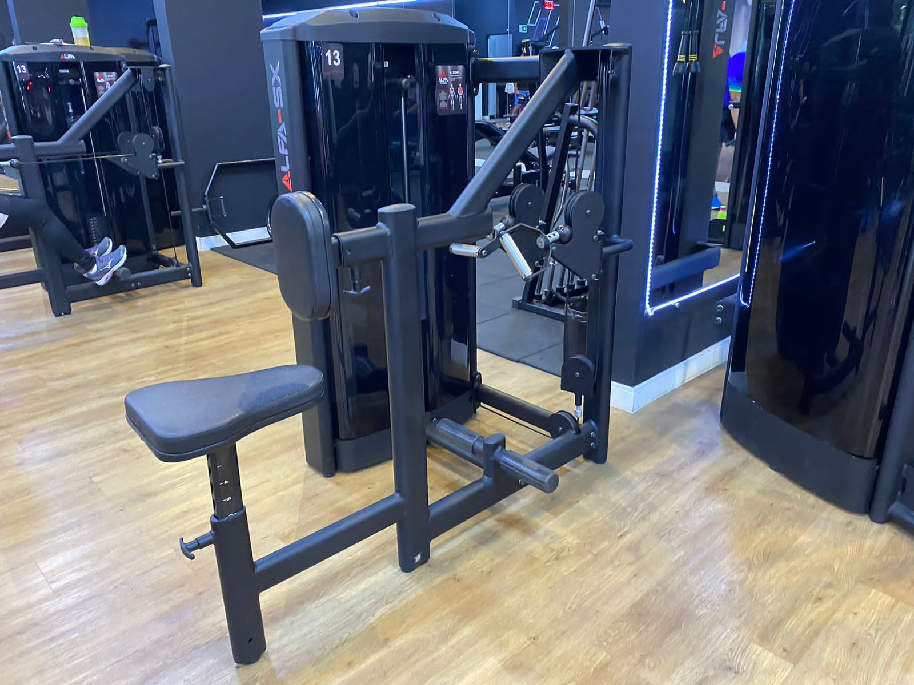
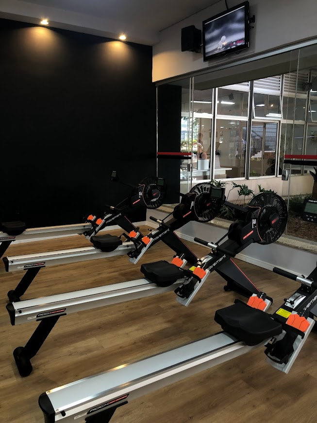
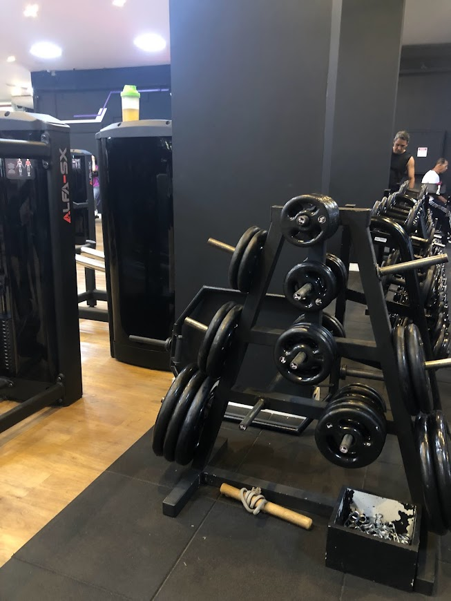
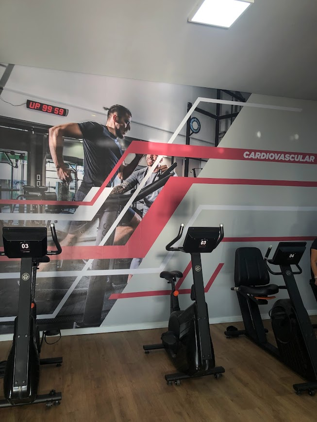
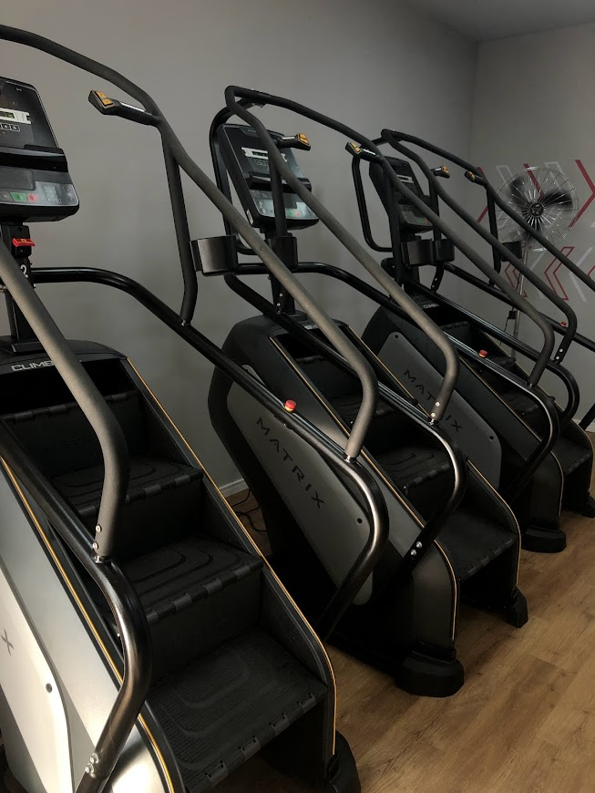
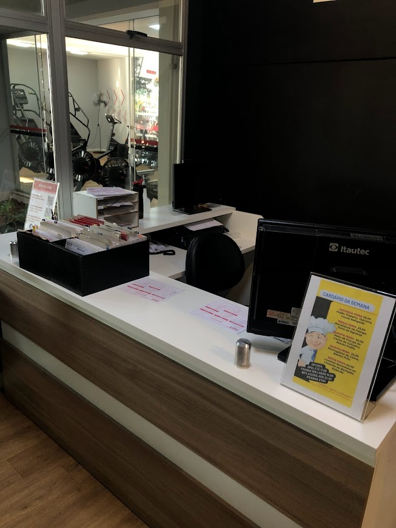
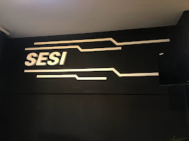

Estrutura
A estrutura da academia do SESI se resumi em ser uma estrutura muito agradável. Equipamentos novos, Ambiente climatizado, personais bem experientes e convictos de ajudarem a todos. É de longe, um local rico em equipamentos necessérios para transformar seu condicionamento físico.
  Benefícios
Os Planos Empresariais são benefícios corporativos para utilização das instalações e atividades esportivas do SESI-SP. São 53 unidades por todo o Estado, toda estrutura e atendimento de qualidade: Piscinas; Academia, onde tem toda uma nova área de cardiovascular, preparada apenas para a melhora da condição de vida, essencial para nossa vida.
 Saiba mais
É simples, leve no CAT SESI Sorocaba os documentos originais: CPF; RG; Comprovante de residência; Carteira de trabalho + último holerite; Foto 3x4 colorida; Certidão de casamento ou declaração de união estável; Atestado médico clínico a partir dos 70 anos (comprovando que pode praticar atividade física); Atestado médico dermatológico para utilização das piscinas; Após adquirir um plano tanto mensal, quanto anual, você poderá ultilizar dos benefícios da academia, pedir um treino personalizdo na recepção.
 © 2023 - Todos os direitos reservados